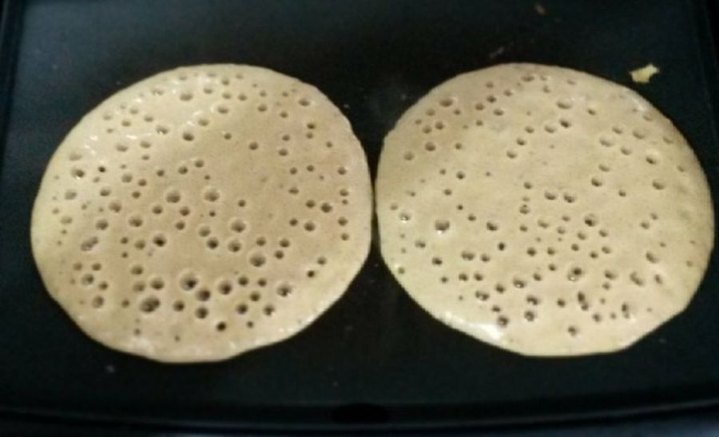
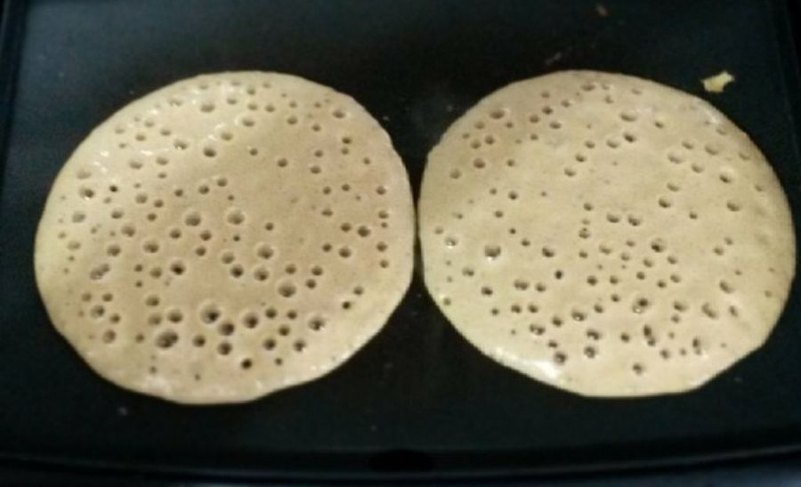

Bata todos os ingredientes no liquidificador por 2 minutos.
Em seguida desligue e, com uma colher, misture a farinha que grudou no copo do liquidificador.
Bata novamente só para misturar e reserve.
Unte a frigideira com um fio de óleo e leve ao fogo até aquecer.
Com o auxílio de uma concha, pegue uma porção de massa e coloque na frigideira, gire a frigideira para espalhar bem a massa.
Abaixe o fogo e deixe dourar por baixo, em seguida vire do outro lado e deixe dourar, repita o processo com toda a massa.
 

Se você gostou de aprender como fazer massa de panqueca simples, pode aproveitar e prepará-la com diversos recheios.
Tamben pode fazer panqueca de carne moída, panqueca de frango desfiado, panqueca de ricota, panqueca de banana e panqueca americana.